Introduction
Ce rapport accompagne le relevé d'audit effectué sur le site « adem.public.lu ».
La méthodologie d'audit employée repose sur le référentiel RGAA 4, consultable à l'adresse suivante : https://accessibilite.public.lu/fr/rgaa4/criteres.html
L'audit a été réalisé au moyen de l'utilisation de navigateurs web et d'outils spécialisés. Des tests de restitution ont également été effectués conformément à la base de référence définie par le RGAA 4.
Échantillon
L'audit a porté sur un échantillon de 15 pages pour le niveau double A (AA) :
Environnement de test (base de référence)
Quelques critères RGAA, notamment ceux de la thématique JavaScript, incluent des tests de restitution à effectuer sur des technologies d'assistance associées à des navigateurs et des systèmes d'exploitation. Pour qu'un dispositif HTML / WAI-ARIA ou son alternative soit considéré comme compatible avec l'accessibilité, il faut qu'il soit pleinement fonctionnel, en termes de restitution et de fonctionnalités sur certaines combinaisons. Vous trouverez une explication détaillée de cet environnement de tests dans le document du RGAA 4.
Nous détaillons ci-dessous la base de référence utilisée pour réaliser les tests de restitution des composants du site.
Environnement de test – ordinateur
| Technologie d'assistance | Navigateur |
|---|---|
| NVDA 2020.3 | Firefox 82 |
| JAWS 2019 | Internet Explorer 11 |
| VoiceOver (Catalina 10.15.6) | Safari 14 |
Environnement de test — mobile
| Système d'exploitation | Technologie d'assistance | Navigateur |
|---|---|---|
| Android 10 | TalkBack (dernière version) | Chrome 86 |
Accessibilité des pages auditées
Le site présente un niveau général d’accessibilité moyen.
Le niveau moyen de conformité relevé atteint 54% de conformité sur l’ensemble des pages auditées, avec 51% de conformité au niveau simple A (A) et 61% de conformité au niveau double A (AA).
Le site est donc partiellement conforme.
Conformité RGAA 4 du site
| Conforme | Non conforme | |
|---|---|---|
| A | 51.16% | 48.84% |
| AA (légal) | 54.10% | 45.90% |
Note sur le calcul de conformité
La conformité globale (Tableau « Conformité RGAA 4 ») est calculée de la manière suivante : C / (C+NC). C est le nombre de critères conformes et NC le nombre de critères non conformes.
C'est ce nombre qui constitue la référence légale. Il représente le taux de conformité de l'échantillon.
Il est normal que le taux de conformité global diffère sensiblement du taux de conformité par page. En effet, un critère NC (non conforme) sur une page rend le critère non conforme sur l'ensemble de l'échantillon.
Pour qu'un site soit conforme (100 % des critères applicables sont conformes au niveau AA), il est nécessaire que le taux de conformité par page équivaille à 100 %.
Impacts utilisateurs
Les principales personnes impactées sont les personnes aveugles et celles qui naviguent au clavier. Les problèmes liés aux scripts, à l’API ARIA et aux formulaires rendent parfois difficile l’utilisation du site par ces utilisateurs.
Contenus dérogés
La dérogation est un moyen d'exclure du champ d'application du référentiel des contenus particuliers. Les cas de dérogations sont très encadrés, vous en trouverez le détail dans le guide des dérogations.
Les contenus suivants n'entrent pas dans le calcul de la conformité ni dans le périmètre des éléments à rendre accessible sont dérogés par application des exemptions définies dans le cadre réglementaire :
- Les vidéos (absence de transcription textuelle, de sous-titres synchronisés et d’audiodescription) publiées avant le 23 septembre 2020 : page « Le marché de l’emploi » (P08 de l’échantillon) et page Pourquoi s’inscrire (P09 de l’échantillon)
- Les documents bureautiques publiés avant le 23 septembre 2018 :page « Publications » (P13 de l’échantillon), page « Communiqués de presse» (P14 de l’échantillon).
Droit à la compensation
Les dérogations émises notamment pour charge disproportionnée demandent en contrepartie la mise en place d'un moyen de compensation pour les utilisateurs. Pour les documents bureautiques par exemple, vous devez fournir un moyen à l'utilisateur de demander une version accessible d'un document s'il en a besoin. Cela peut être un mail ou un formulaire contact.
Note sur le relevé des non-conformités
Ne sont cités dans ce rapport que quelques exemples issus du relevé des non-conformités.
De plus, toutes les occurrences d’une non-conformité ne sont pas listées dans le relevé. Par exemple pour le carrousel présent en bas des pages intérieures, les erreurs le concernant sont relevées sur la première page de l’échantillon qui le contient, mais pas sur toutes les pages. De même, concernant les contrastes de couleur, le relevé mentionne quelques occurrences, mais ne les cite pas tous.
Avis
Le site contient quelques problèmes, notamment pour les personnes utilisant une technologie d’assistance, car de nombreux éléments ne sont pas bien restitués pour les lecteurs d’écran par exemple.
Les non-conformités les plus bloquantes pour les utilisateurs concernent :
- Certains dispositifs JavaScript, notamment par l'utilisation inappropriée de propriétés ARIA et l'implémentation incomplète de modèles de conception ARIA ;
- Les contenus additionnels qui n’apparaissent pas à la prise de focus (le menu de navigation principal) ;
- Les intitulés de liens qui ne sont pas toujours construits de façon pertinente (nom visible absent ou partiellement présent dans le nom accessible, infobulle non pertinente etc.) ;
- Les noms accessibles des liens qui ne reprennent pas l’intitulé visible du lien ;
- Des textes en langues étrangères non indiqués dans le site.
Ce sont donc ces points qui devront nécessiter une attention toute particulière et qui demanderont le plus d'efforts.
Annexe technique
Images
Recommandation
Donner à chaque image porteuse d'information une alternative textuelle pertinente et une description détaillée si nécessaire. Lier les légendes à leurs images. Remplacer les images textes par du texte stylé lorsque c'est possible.
Images de décoration
Le site contient des images de décoration qui ne sont pas correctement identifiées, soit parce qu'elles ont une alternative renseignée soit parce qu'il manque les attributs nécessaires pour qu'elles soient ignorées par les technologies d'assistance.
Ces images n'apportent aucune information et peuvent causer des problèmes de compréhension pour les aveugles et les grands malvoyants qui vont écouter les contenus avec un lecteur d'écran.
- Dans le cas d'une image insérée avec la balise
img, mettre unalt="". - Dans le cas d'une image insérée avec la balise
svg, mettre une propriété ARIAaria-hidden="true".
Constats sur le site
Les icônes svg du bloc « JobBoard » sur la page d’accueil, ainsi que les icônes svg contenues dans les liens des réseaux sociaux présents dans le pied de page sont des images de décoration mais ne sont pas correctement identifiées. Un utilisateur aveugle qui navigue avec un lecteur d’écran va accéder à ces images alors qu’elles sont inutiles pour la compréhension du contenu.
Images porteuses d'information complexe
Certaines images porteuses d'informations sont complexes et nécessitent une description détaillée, pertinente, structurée et adjacente à l'image afin de permettre aux personnes ne percevant pas les images (comme les personnes aveugles), ou ayant des difficultés à les comprendre lorsqu'elles contiennent du texte (personnes ayant des difficultés de lecture, comme les dyslexiques par exemple) d'accéder à l'information.
Il sera possible e masquer cette description et de prévoir un bouton permettant à l'utilisateur de l'afficher si besoin (par exemple : « Afficher la description de l'image »). Voir un exemple de ce mécanisme. Il est également possible de proposer un lien adjacent à l'image vers la description détaillée.
Constats sur le site
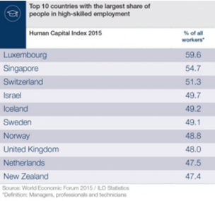
Dans la page « Une main-d'œuvre qualifiée », le tableau « Top 10 countries with the largest share of people in high-skilled employment » n’a pas de description détaillée. Il contient un tableau de données dont le contenu n’est pas consultable pour les utilisateurs aveugles, pour les grands malvoyants qui ne vont pas pouvoir agrandir la taille du texte ni changer les couleurs (textes et fond). Une description détaillée devrait reprendre l’ensemble des données présentes dans cette image, soit avec la même structure de tableau, soit avec une structure de liste par exemple.
Images textes
Lorsque des images textes peuvent être reproduites en HTML et CSS, vous ne devez pas utiliser d'images.
Les textes doivent être réalisés en HTML et CSS afin de permettre aux utilisateurs qui en ont besoin d'adapter leur lisibilité (agrandissement des caractères, modification des couleurs, des polices…).
Il est également possible de conserver les images textes et de fournir à l'utilisateur un mécanisme de remplacement qui lui permet, avec un bouton par exemple, de remplacer toutes les images textes en textes stylés.
Constats sur le site
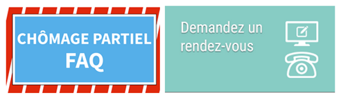Dans le bloc de droite de la page d’accueil, on trouve deux images qui comportent du texte informatif en image : les images « chômage partiel FAQ » et « Demandez un rendez-vous ».
Ceci est une problématique majeure. En effet, de nombreux utilisateurs sont impactés par ces informations uniquement disponibles sous format image : les utilisateurs aveugles en premier lieu ne pourront jamais avoir accès à ce contenu, également les utilisateurs qui ont besoin d’adapter les caractères pour leur besoin de lecture ne le pourront pas sur ce type de contenu.
Cadres
L'absence d'identification des cadres peut poser un problème de repérage dans la structure de la page ou de compréhension des contenus pour les personnes aveugles.
Constats sur le site
Dans la page « Pourquoi s'inscrire? », on trouve plusieurs vidéos intégrées dans un cadre, mais elles ne possèdent pas de titre (attribut title), par exemple la vidéo « Pourquoi s'inscrire à l'ADEM ? » et la vidéo
« Revis ».
Couleurs
Recommandation
Ne pas donner l'information uniquement par la couleur et utiliser des contrastes de couleurs suffisamment élevés pour les textes et les composants d'interface.
Contrastes des textes
Plusieurs couleurs présentent un rapport de contraste insuffisant, ce qui peut poser problème aux grands malvoyants et aux déficients visuels qui ont des difficultés à percevoir les couleurs ou les contrastes.
Rapports de contrastes définis par le RGAA
- Pour les textes qui ont une taille de police calculée inférieure à 24px sans effet de graisse ou une taille de police calculée inférieure à 18,5px avec effet de graisse, le rapport de contraste entre la couleur du texte (y compris le texte en image) et son arrière-plan doit être de 4.5:1, au moins.
- Pour les textes qui ont une taille de police calculée supérieure ou égale à 24px sans effet de graisse ou une taille de police calculée supérieure ou égale de 18,5px avec effet de graisse, le rapport de contraste entre la couleur du texte (y compris le texte en image) et son arrière-plan doit être de 3:1, au moins.
Vous pouvez foncer les couleurs pour obtenir le rapport de contraste exigé.
Si la charte graphique ne peut être modifiée, fournissez une méthode aux utilisateurs pour consulter le site avec des contrastes suffisants. Ceci peut être réalisé simplement avec une fonctionnalité JavaScript et une surcharge CSS des couleurs.
Vous pouvez voir un exemple de ce type de mécanisme sur le site sncf.com. Dans les réglages d'accessibilité, vous trouverez une option qui permet d'afficher le site avec des contrastes renforcés et inversés.
Constats sur le site
Dans chaque page, le contraste entre la couleur du texte et la couleur de fond n’est pas suffisant. Par exemple :
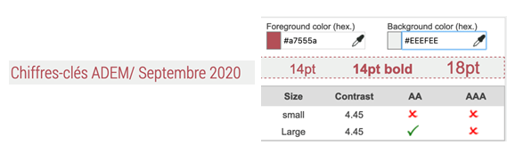La couleur des liens (#D9232E) ainsi que les liens visités (#A7555A) sur le fond gris (#EEEFEE) a un ratio de 4,45 au lieu de 4,5.
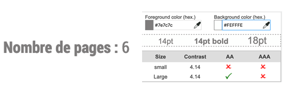Dans les pages « Recherche » et « Publications », le texte gris (#7E7C7C) sur le fond blanc (#EFFFE) a un rapport de contraste de 4.14, au lieu de 4,5.
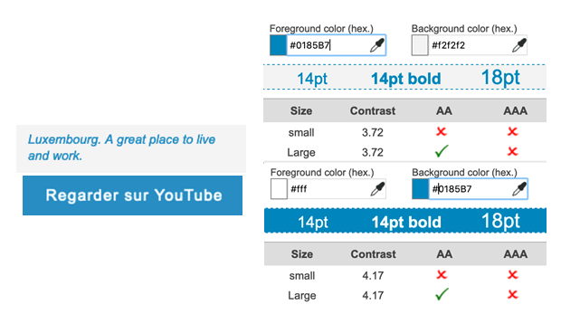Dans la page « Panorama du marché de l'emploi » et « Pourquoi s’inscrire », le texte bleu (#0185B7) sur fond gris (#F2F2F2) a un ratio de 3,72, au lieu de 4,5. Ce même bleu utilisé avec le blanc dans la fenêtre modale des vidéos, a un ratio insuffisant (4,17).
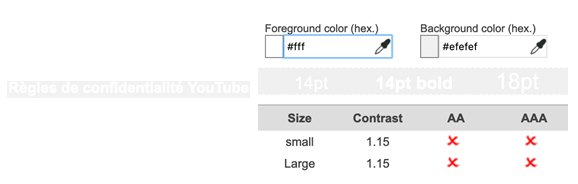Dans la fenêtre modale des vidéos (alerte YouTube), le texte blanc sur fond gris (#EFEFEF) a un ratio de 1.15, au lieu de 4,5.
Contraste des composants d'interface
Les composants d'interface, les illustrations porteuses d'information ou encore les mises en couleurs porteuses d'information doivent être suffisamment contrastés pour être perçus par les utilisateurs ayant des troubles de perception des couleurs. Par exemple, une icône porteuse d'information devra avoir un rapport de contraste avec la couleur de fond de 3. De même, pour un champ de saisie de formulaire, dont la zone active est matérialisée par sa bordure, alors la couleur de cette bordure devra avoir un rapport de contraste de 3 avec la couleur de fond de la page.
Constats sur le site
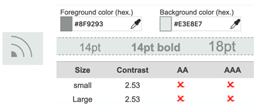Le gris foncé (#8F9293) au survol des boutons des réseaux sociaux dans le pied de page sur un fond gris clair (#E3E8E7) donne un ratio insuffisant : 2,53 au lieu de 3,1.
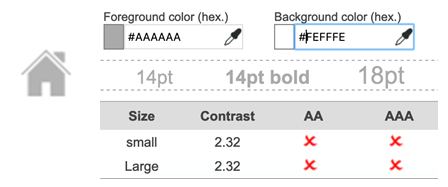Le gris foncé (#AAAAAA) de l’icône de retour à l’accueil sur un fond blanc (#FEFFFE) donne un ratio insuffisant : 2,32 au lieu de 3,1.
Les utilisateurs qui ont des difficultés à percevoir les contrastes pourront ne pas percevoir ces éléments et donc en ignorer la présence.
Information par la couleur
Lorsqu'une information est donnée par la couleur, il faut qu'elle soit également véhiculée par une autre méthode, par exemple par un texte qui donne la même information, pour être perçue par les utilisateurs aveugles.
Il faut également donner un indice visuel autre que la couleur, afin de répondre aux besoins des personnes déficientes visuelles (les daltoniens par exemple). Il peut s'agir d'un symbole, d'une texture, de chiffres.
Constats sur le site
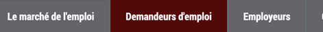Dans le menu de navigation, la page active est mise en évidence uniquement par la couleur, un utilisateur qui perçoit mal les couleurs n’accédera pas à l’information. Le changement de couleur devrait être accompagné d’un changement de forme.
Liens
Recommandation :
Donner des intitulés de lien explicites, grâce à des informations de contexte notamment, utiliser le titre de lien le moins possible. S'assurer que le nom visible est contenu dans le nom accessible.
Pertinence des intitulés
Un lien possède généralement un intitulé et un contexte. L'intitulé est le texte présent dans la balise <a> (ou la valeur de l'attribut alt de l'image dans le cas d'un lien-image) et le contexte du lien est représenté par le titre qui précède, le titre du lien (l'infobulle) ou tout simplement le texte dans lequel il est inséré.
Pour être considéré comme pertinent, l'intitulé d'un lien doit permettre de comprendre sa destination en prenant en compte son contexte.
Constats sur le site
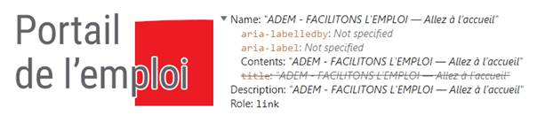Le nom accessible du lien-image « Portail de l’emploi » ne reprend pas l’intitulé visible du lien. Le nom accessible est constitué de l’alternative de l’image qui est « ADEM - FACILITONS L'EMPLOI — Allez à l’accueil » et qui ne reprend pas l’information visible « Portail de l’emploi ». Ceci peut être problématique pour les utilisateurs de commande vocale qui se reposent sur les intitulés visibles pour activer les éléments.
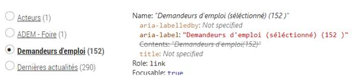On retrouve la même problématique dans la page de résultats de recherche : lorsqu’un filtre est sélectionné, l’attribut aria-label (qui constitue alors le nom accessible) ne reprend pas exactement l'intitulé du lien visible, la mention « sélectionné » est insérée entre les termes
du nom visible.
Sur la page d’accueil, certains liens ont des infobulles (attribut title) qui ne reprennent pas l’intitulé du lien. Par exemple, pour le lien « Demandez un accès au JobBoard », l’infobulle indique « Demandez un accès au JobBoard », mais ne reprend pas la mention « espace réservé aux employeurs ». Ceci est problématique pour les utilisateurs aveugles qui ont paramétré leur lecteur d’écran afin qu’il ne restitue que l’infobulle si elle présente, dans ce cas, une partie de l’information ne leur est pas donnée.
On retrouve la même erreur pour le lien « Agences et plan d’accès » dont l’infobulle est « Contact » ou encore pour le lien « info@adem.eta.lu » dont l’infobulle est « nouvelle fenêtre » uniquement.
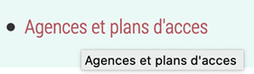Dans certaines pages, on trouve également des infobulles inutiles (identiques à leur intitulé), c’est par exemple le cas du lien « Agences et plan d’accès de la page « Déclarer un poste vacant ».
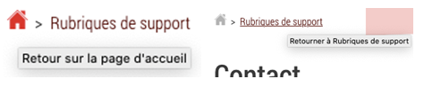De même, dans les pages intérieures, les liens du fil d’Ariane ont tous une infobulle inutile (identique à l’intitulé) qui mentionne « Retour sur » ou « Retourner à ».
Liens-images
Un lien-image est un lien dont le contenu n'est composé que d'une ou plusieurs images (balises <img>). Généralement, ces liens ne posent aucun problème aux utilisateurs voyants qui parviennent à comprendre la destination du lien grâce à l'image et son contexte. En revanche, pour une personne aveugle, ces liens doivent obligatoirement posséder un intitulé.
L'intitulé d'un lien-image est généré grâce à l'alternative de l'image contenue dans ce lien.
Constats sur le site
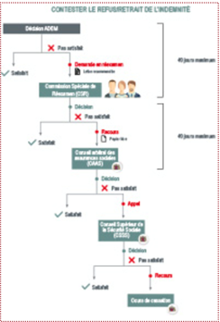Dans la page « Conseils pratiques/ FAQ », le lien-image qui permet de télécharger le schéma de contestation des indemnités n’a pas d’intitulé de lien, en effet, l’image n’a pas d’alternative renseignée.
Présence d'intitulés
Un lien doit toujours posséder un intitulé permettant à l'utilisateur de comprendre sa destination. Les liens contenant uniquement des objets graphiques (images, icônes, etc.) posent souvent problème pour les personnes aveugles.
Pour ces liens, la technique pour fournir un intitulé dépend des cas :
- Si ces liens-images sont construits avec des balises images (
<img />), renseignez l'alternative de l'image (par exemple :<a href="https://twitter.com/example"><img src="path/to/img/png"alt="Suivez-nous sur Twitter" /></a>) - Si ces liens-images sont construits avec des balises SVG (
<svg>), alors ajoutez sur cette baliserole="img"pour indiquer aux lecteurs d'écran qu'il s'agit bien d'une image et un intitulé pararia-label="Suivez-nous sur Twitter".
Constats sur le site
Les liens des réseaux sociaux présents à droite de chaque page ont des intitulés masqués (en CSS display:none), ce sont des liens vides. Un utilisateur de lecteur d’écran qui ne voit pas la mise en forme ne peut pas connaître la destination des liens.
Scripts
Recommandation :
Donner si nécessaire à chaque script une alternative pertinente. Rendre possible le contrôle de chaque code script au moins par le clavier et la souris et s'assurer de leur compatibilité avec les technologies d'assistance. Identifier les messages de statut lorsque c'est nécessaire.
Utilisation des boutons et des liens
Pour les aveugles et les grands malvoyants qui utilisent un lecteur d'écran, ce manque de distinction claire entre les liens et les boutons peut poser de graves problèmes.
Ainsi, un bouton implémenté sous la forme d'un lien qui déclenche une action de la page, risque de perturber l'utilisateur qui s'attendra au chargement d'une nouvelle page.
De manière générale, les liens devraient être réservés à l'affichage d'une nouvelle page ou la création de liens d'accès rapide dans le contenu. Dans tous les autres cas, l'emploi d'un bouton d'action est plus pertinent.
Enfin, chaque bouton doit avoir un nom accessible défini, soit par l'intermédiaire d'un texte (visible ou positionné hors écran) ou d'une propriété title, aria-label ou aria-labelledby.
Constats sur le site
Les liens contenant un role="button" n’implémentent que partiellement le motif de conception ARIA button, ils doivent également être activés en cliquant sur Espace.
Le bouton d’impression présent à droite de chaque page n’a pas d’intitulé (celui-ci est masqué aux technologies d’assistance avec la propriété CSS display:none). Un utilisateur aveugle qui navigue avec un lecteur d’écran ne connaîtra pas la fonction du bouton.
Fenêtres modales
Constats sur le site
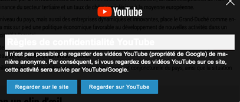Les fenêtres modales apparaissant avant le visionnage des vidéos n’implémentent que partiellement le motif de conception ARIA dialog.
Éléments obligatoires
Recommandation
Vérifier que chaque page web a un code valide selon le type de document, un titre pertinent et une indication de langue par défaut. Vérifier que les balises ne sont pas utilisées uniquement à des fins de présentation, que les changements de langues et de direction de sens de lecture sont indiqués.
Titre de la page
Le titre de la page (visible dans l'onglet du navigateur) est un élément de repère dans le site web. Pour les utilisateurs de lecteur d'écran (utilisateurs aveugles ou grands malvoyants), c'est le premier élément restitué par le lecteur d'écran au chargement de la page. Cela permet de donner du contexte aux utilisateurs qui n'ont pas une vision globale de la page. Pour les utilisateurs avec des troubles de la mémoire, c'est l'information à laquelle ils accèdent lorsqu'ils naviguent avec l'historique de navigation du navigateur. Il est donc essentiel d'avoir des titres de pages pertinents, concis et très souvent uniques dans le site, et qui reflètent de la position de l'utilisateur dans le site web.
Il est des cas particuliers, comme les pages dont le contenu est une liste de résultats paginés (ex. : les résultats de recherche), pour lesquels le titre doit refléter la nature de la recherche ainsi que le numéro de page en cours de consultation.
Constats sur le site
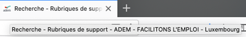
La page des résultats de recherche a un titre de page qui n’est pas pertinent puisqu’il ne reprend pas la pagination ni les filtres sélectionnés par l’utilisateur.
Indication de langue
Les lecteurs d'écran utilisent les indications de langue pour vocaliser le contenu dans la langue définie. La page doit contenir une définition de langue principale (généralement sur l'élément html).
Ensuite, les éléments de langue étrangère présente dans le contenu doivent être signalés. Si dans la page on trouve, des termes absents du dictionnaire de la langue française, il faut les identifier afin que le lecteur d'écran restitue dans la langue appropriée. En effet, une mauvaise prononciation pourrait mener à des incompréhensions pour les utilisateurs qui reposent uniquement sur des restitutions orales. Les noms propres sont exclus de cette obligation.
Constats sur le site
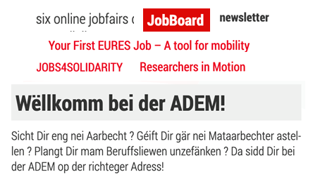On trouve quelques termes et textes en luxembourgeois ainsi que de nombreux termes en anglais dans la version française du site :
- Luxembourgeois : « Wëllkomme bei der », « Sicht Dir eng nei Aarbecht ?... »
- Anglais : « Six online jobfairs », « JobBoard”, « newsletter », « Your First euros job », « A tool for mobility », « Jobs 4 solidarity », « Researchers in motion ».
Dans toutes les pages (sauf la page d’accueil), la valeur de l’attribut aria-label="Breadcrumb" présent sur l'élément <nav> du fil d’Ariane n'est pas pertinente, car elle est en anglais dans la version française.
Validité du code
Les technologies d'assistances, comme les lecteurs d'écran ou les systèmes de contrôle à la voix, s'appuient sur le code des pages pour générer les restitutions et les interactions avec l'utilisateur. Un lecteur d'écran va exploiter le code HTML fourni par le navigateur et les informations accessibles au moyen des API d'accessibilité du système.
Si le code comporte des erreurs (balises mal fermées par exemple), il y a un risque que les fonctionnalités du lecteur d'écran soient impactées, comme la navigation de lien en lien par exemple.
Pour vérifier la conformité d'une page, vous pouvez utiliser le validateur mis à disposition par le W3C.
Constats sur le site
Balises utilisées à des fins de présentation
Les éléments de structure HTML ont chacun une sémantique particulière (paragraphe, titre, image, lien, etc.). Si les éléments sont mal employés (détournés de leur utilité première), cela peut poser des problèmes aux utilisateurs qui naviguent à l'aide d'une technologie d'assistance (lecteur d'écran, plug-in…). En effet, les technologies d'assistance mettent des raccourcis à disposition permettant de naviguer rapidement entre certains types d'éléments (paragraphes, titres, listes, etc.). Si ces éléments sont mal employés, les utilisateurs ne peuvent pas utiliser ces fonctionnalités de repère et de navigation dans le contenu.
Constats sur le site
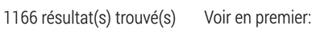Quelques paragraphes sont insérés avec des éléments <span>, comme ici dans la page « Recherche ».
Dans les pages « Vous souhaitez vous inscrire à l’ADEM ? » et « Pourquoi s’inscrire », une balise <p> est utilisée uniquement pour ajouter un espace. Les mises en forme doivent être réalisées uniquement avec les feuilles de styles, et non en détournant des balises qui portent une sémantique.
Structuration de l'information
Recommandation
Utiliser des titres, des listes, des abréviations et des citations pour structurer l'information. S'assurer que la structure du document est cohérente.
Titres
Le titrage des contenus est une étape importante dans la structuration des contenus. Cela répond à deux besoins :
- identifier rapidement un contenu recherché ;
- naviguer rapidement dans le contenu en se déplaçant de titre en titre.
Un titrage correct fournit à l'utilisateur de lecteur d'écran un plan du document et lui permet de naviguer de titre en titre pour se déplacer plus rapidement dans le contenu de la page.
Pour valider la structure de votre page, vous pouvez utiliser l'extension Firefox HeadingsMap. Lorsque l'extension est active, sélectionnez l'onglet « Headings » et vérifiez la cohérence et l'imbrication des titres.
Constats sur le site
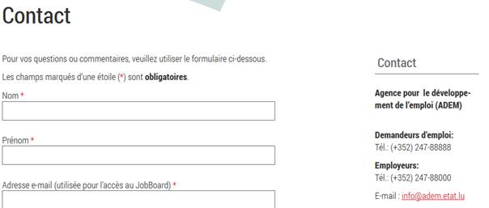Dans la page « Contact », deux titres sont composés du même texte « Contact » alors qu’ils titrent deux sections différentes (l’un titre le formulaire de contact, l’autre titre les coordonnées de l’ADEM). Deux titres identiques peuvent être perturbants pour un utilisateur aveugle qui pourra penser que les contenus sont identiques.
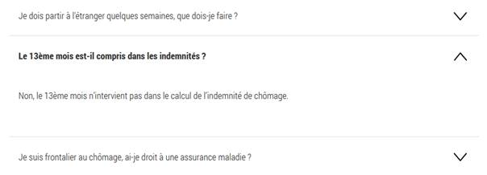Dans la FAQ, toutes les questions devraient être des titres puisqu’elles structurent l’ensemble du contenu de cette page.
Listes
La structuration en listes permet aux utilisateurs de lecteurs d'écran de consulter plus rapidement le contenu, grâce à des raccourcis spécifiques, et d'accéder directement à une liste ou de la passer sans avoir à en parcourir tous les items.
Constats sur le site
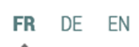Tous les rôles ARIA (role="menu", role="presentation", role="menuitem) associés à la liste des liens de langues ne sont pas pertinents dans ce contexte. Ils définissent des rôles d’éléments non pertinents qui pourraient induire les utilisateurs aveugles en erreur. En effet, ces propriétés ARIA vont être exploitées en premier lieu par les lecteurs d’écran utilisés par les personnes aveugles.
Structure du document
L'utilisation correcte des balises HTML5 et des landmarks ARIA va permettre d'enrichir la restitution pour les utilisateurs aveugles qui ne perçoivent pas les mises en forme : la navigation principale ne sera plus perçue simplement comme une liste de liens, elle sera restituée à l'utilisateur comme un élément de navigation, par l'intermédiaire du lecteur d'écran qui annoncera « région » ou « repère ».
De plus, ces marqueurs sémantiques vont également constituer des éléments de navigation rapide dans la page. Grâce à un raccourci clavier, certains utilisateurs vont pouvoir naviguer plus rapidement entre les régions qui auront été ainsi identifiées.
Constats sur le site
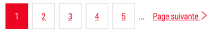Dans les pages « Recherche »et « Publications », les éléments de pagination, quant à eux, sont des éléments de navigation dans les collections de pages (les résultats de recherche ou l’ensemble des
publications), il est indispensable de les identifier correctement (un élément <nav role="navigation" est nécessaire pour ces éléments).
Présentation de l'information
Recommandation
Utiliser des feuilles de styles pour contrôler la présentation de l'information. Vérifier l'effet de l'agrandissement des tailles des caractères sur la lisibilité. S'assurer que les liens sont correctement identifiables, que la prise de focus est signalée, que l'interlignage est suffisant et donner la possibilité à l'utilisateur de contrôler la justification des textes. S'assurer que les textes cachés sont correctement restitués et que l'information n'est pas donnée uniquement par la forme ou la position d'un élément. S'assurer que les contenus sont lisibles et utilisables dans une fenêtre de largeur réduite. Veiller à ce que l'application de paramètres typographiques n'entraîne pas la perte de contenu ou de fonctionnalité. S'assurer que les contenus qui apparaissent au survol et à la prise de focus puissent être contrôlés par l'utilisateur.
Contenu compréhensible sans les styles : ordre visible vs ordre réel
Un utilisateur aveugle n'a pas accès à la mise en forme qui parfois est porteuse d'informations importantes, notamment des relations entre les éléments.
Il est important de ne pas implémenter les textes dans l'ordre visuel, mais bien dans l'ordre logique de dépendance et hiérarchie des éléments.
Le contenu doit rester compréhensible sans les feuilles de styles (vous pouvez tester vos contenus en désactivant les feuilles de styles).
Constats sur le site
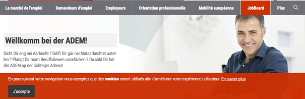Il est important que le bandeau des cookies soit situé en tant que premier élément du code source HTML, afin que les personnes aveugles, qui consultent la page avec un lecteur d’écran de manière linéaire, puissent tout de suite prendre connaissance de l’alerte.
Visibilité de la prise de focus
Les personnes avec un handicap moteur qui naviguent au clavier peuvent rencontrer des difficultés considérables à utiliser du contenu si elles ne sont pas en mesure de repérer l'indication visuelle du focus et ses déplacements.
Constats sur le site

Dans la page d’accueil, la prise de focus sur les blocs de liens « demandeurs d'emploi », « employeurs », « orientations professionnelles », « le marché de l'emploi », n’est pas visible.
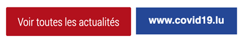De même pour les boutons, comme « voir toutes les actualités » ou encore « www.covid19.lu » dans la page d’accueil.
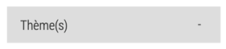La prise de focus n’est pas visible sur les éléments <summary>
présents dans les pages « Recherche »
et « Publications ».
Paramètres typographiques
Les utilisateurs malvoyants et/ou dyslexiques ont souvent recours à des adaptations de la présentation des textes. Pour cela, on doit s'assurer que de tels paramètres ne viennent pas perturber leur lecture sur le site.
Les présentations doivent supporter l'application de paramètres typographiques visant à augmenter les interlignages, interlettrages, les espaces entre les mots et entre les paragraphes. L'application de ces paramètres ne doit pas entraîner la perte de contenus ou de fonctionnalité :
- L'interlignage augmenté de 1,5 fois la taille de la police
- L'espacement entre les paragraphes augmenté de 2 fois la taille de la police
- L'espacement des lettres augmenté de 0,12 fois la taille de la police
- L'espacement des mots augmenté jusqu'à 0,16 fois la taille de la police
Constats sur le site
Sur toutes les pages, l’application de ces paramètres provoque un défaut de lisibilité : la loupe qui permet d’afficher la zone de recherche et l’onglet « plus » se chevauchent.
Contenus additionnels au survol et au focus
Les contenus additionnels qui apparaissent au survol ou à la prise de focus (par exemple, un menu déroulant, une infobulle d'information), peuvent être contrôlés par l'utilisateur. Par exemple, les utilisateurs malvoyants utilisateurs de loupe d'écran peuvent déclencher l'affichage accidentel des contenus qui apparaissent au survol et ces affichages non désirés perturbent la consultation pour ces utilisateurs. L'utilisateur doit alors disposer d'un moyen simple pour les masquer et continuer sa consultation.
Également, en utilisant une loupe d'écran, il est probable que le contenu additionnel soit en fait apparu en dehors de la zone de zoom de la loupe, l'utilisateur doit pouvoir survoler le contenu additionnel à la souris.
Constats sur le site
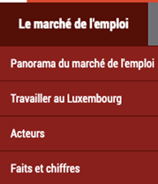Dans le site, les sous-onglets du menu de navigation ne sont pas contrôlables par l’utilisateur (on ne peut pas masquer le contenu avec la touche Echap par exemple), ni atteignables au clavier. Ce menu est donc inutilisable pour un utilisateur qui navigue exclusivement au clavier.
Formulaires
Recommandation :
Associer pour chaque formulaire chacun de ses champs à son étiquette, grouper les champs dans des blocs d'informations de même nature, regrouper les items de même nature dans les listes de choix, donner à chaque bouton un intitulé explicite. Vérifier la présence d'aide à la saisie, s'assurer que le contrôle de saisie est accessible et que l'utilisateur peut contrôler les données à caractère financier, juridique ou personnel.
Contrôle de saisie et aide à la saisie
Les messages d'erreur de saisie des champs de formulaire doivent être liés correctement aux champs en erreur.
Vérifier que pour chaque message d'erreur la méthode suivante est utilisée.
Constats sur le site
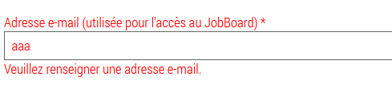Dans le formulaire de contact, le champ email attend un format de saisie particulier qui n’est jamais spécifié. Ce format pourrait être ajouté directement dans l’étiquette par exemple. De plus, le message d’erreur devrait également fournir un exemple réel de saisie et ne pas juste mentionner l’état invalide du format.
On retrouve la même erreur pour le formulaire d’inscription.
Identification des données attendues
Certains utilisateurs qui ont des troubles d'accès au langage verbal (paralysie cérébrale, aphasie par exemple) auront des difficultés à accéder au sens des termes écrits. Ainsi, pour leur permettre de remplacer les étiquettes présentes dans les formulaires par des étiquettes (verbales ou imagées) qu'ils connaissent, il est nécessaire d'identifier les champs avec un attribut particulier, de sorte qu'une technologie d'assistance pourra réaliser la personnalisation du formulaire nécessaire à l'utilisateur.
L'identification de ces champs permet également aux utilisateurs d'employer des outils pour remplir automatiquement les champs identifiés avec des valeurs de l'utilisateur.
On ne va rechercher que les champs qui attendent une donnée personnelle. Le RGAA demande d'utiliser l'attribut autocomplete et il fournit l'ensemble des valeurs possibles pour l'attribut.
Constats sur le site
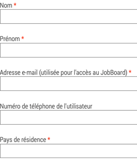Dans le formulaire de contact, les champs nom, prénom, adresse email et pays ne sont pas identifiés avec l’attribut autocomplete.
Il en est de même pour le formulaire d’inscription, pour les champs prénom, nom, adresse e-mail et numéro de téléphone.
Navigation
Recommandation :
Faciliter la navigation dans un ensemble de pages par au moins deux systèmes de navigation différents (menu de navigation, plan du site ou moteur de recherche), un fil d'Ariane et l'indication de la page active dans le menu de navigation. Identifier les groupes de liens importants et la zone de contenu et donner la possibilité de les éviter par des liens de navigation interne. S'assurer que l'ordre de tabulation est cohérent et que la page ne comporte pas de piège au clavier. S'assurer que les raccourcis clavier qui utilisent une seule touche sont contrôlables par l'utilisateur.
Ordre de tabulation
Constats sur le site
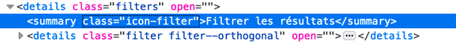Dans les pages « Recherche » et « Publications », un élément <summary> non visible reste accessible aux utilisateurs qui naviguent au clavier et masque les filtres à son activation.
Consultation
Recommandation
Vérifier que l'utilisateur a le contrôle des procédés de rafraîchissement, des changements brusques de luminosité, des ouvertures de nouvelles fenêtres et des contenus en mouvement ou clignotants. Ne pas faire dépendre l'accomplissement d'une tâche d'une limite de temps sauf si elle est essentielle et s'assurer que les données saisies sont récupérées après une interruption de session authentifiée. Proposer des versions accessibles ou rendre accessibles les documents en téléchargement. S'assurer que la consultation n'est pas dépendante de l'orientation de l'écran. Toujours proposer un geste simple en alternative d'un geste complexe permettant de réaliser une action.
Documents en téléchargement
Assurez-vous que chaque document soit accessible (cf. les Guides de créations de documents bureautiques accessibles), ou qu'il dispose d'une alternative accessible proposant le même contenu (par exemple, une version HTML correctement structurée).
Constats sur le site
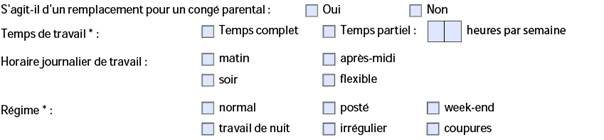Dans la page « Déclarer un poste vacant », les formulaires PDF ont certains problèmes de structure qui impactent l’accès aux informations pour les utilisateurs aveugles. Par exemple, dès qu’on atteint des groupements de cases à cocher, toutes les cases à cocher ne sont pas lues, certaines ont des étiquettes restituées sont différentes de l’étiquette visible. De manière générale également, les champs présents dans ces regroupements ont des étiquettes qui sont pas toujours pertinentes du fait justement que ces regroupements perceptibles visuellement ne soient pas retranscrits par les lecteurs d’écran.